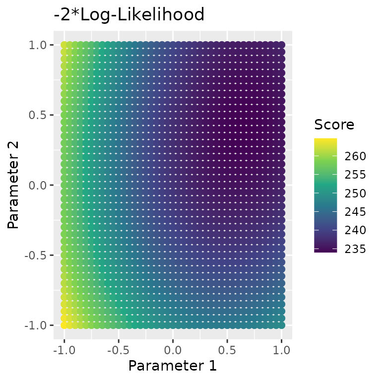
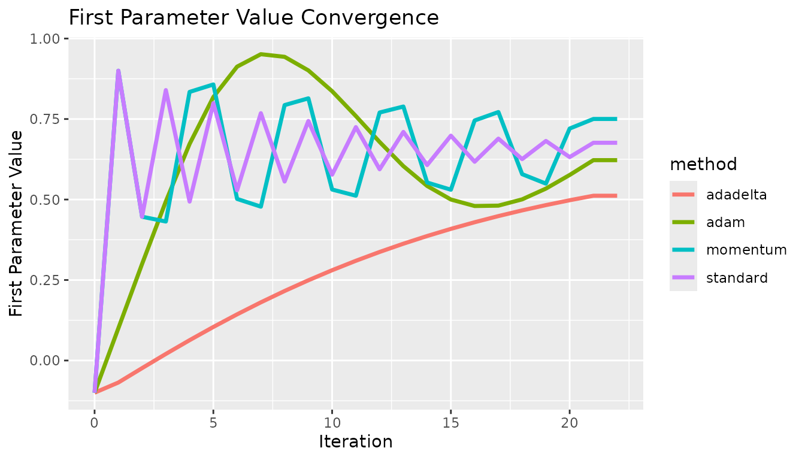
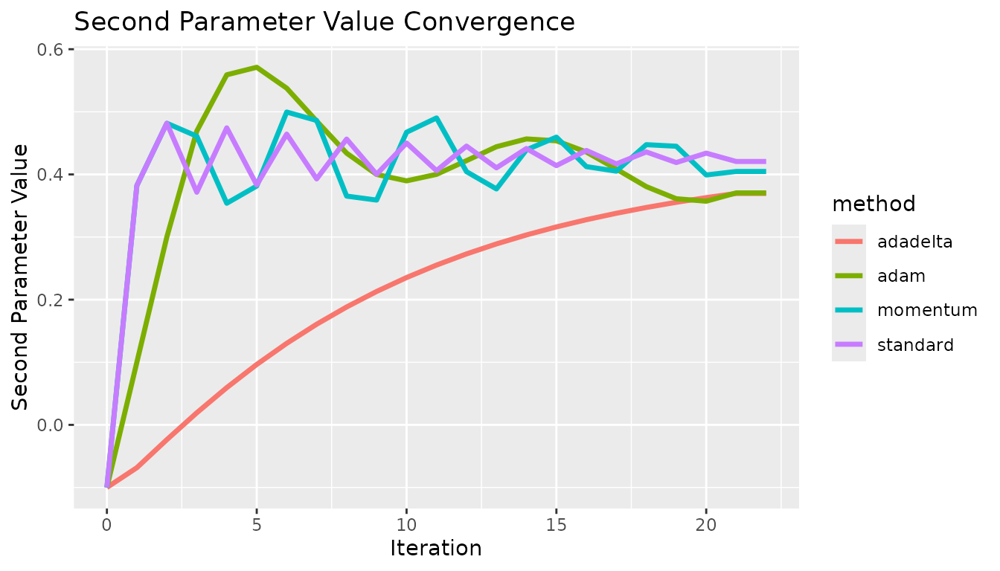
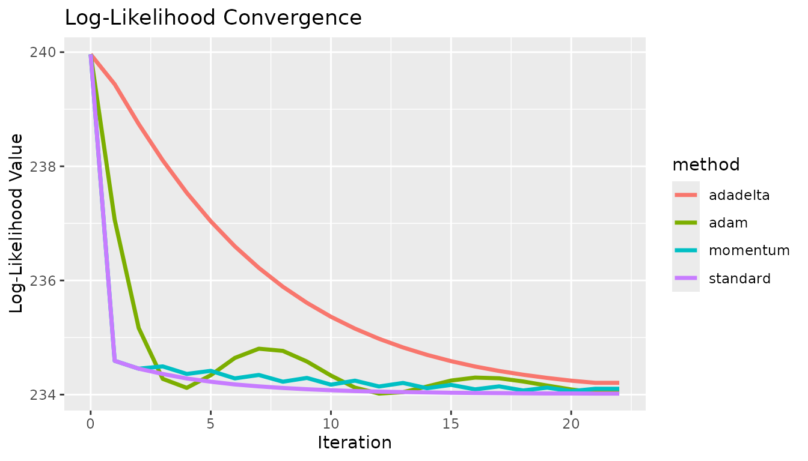
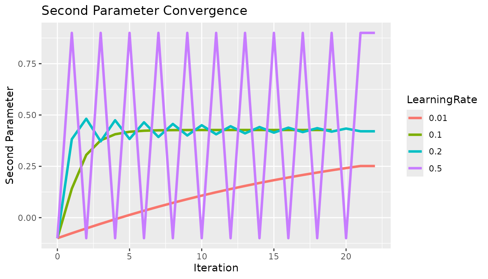
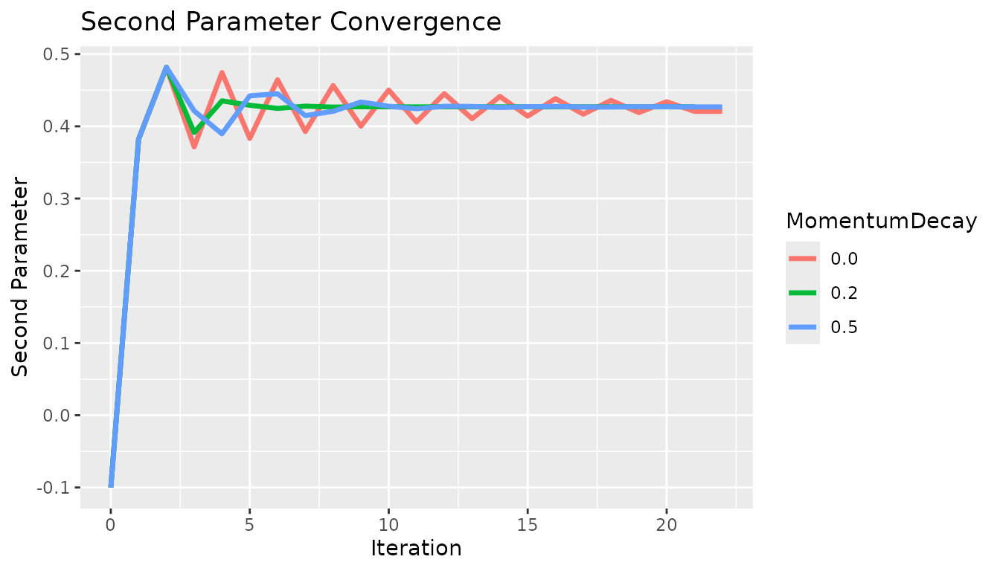

Sys.setenv("OMP_THREAD_LIMIT" = 1) # Reducing core use, to avoid accidental use of too many cores
library(Colossus)
library(data.table)Optimization Theory
Colossus offers three levels of score calculation, calculating only the score, calculating the score and first derivative, and calculating the score and both first and second derivatives. The second and third options correspond to the Gradient Descent and Newton-Raphson optimization approaches. The goal of this vignette is to discuss how these methods are different, and in what circumstances each might be most appropriate. In both cases, the algorithm is designed to iteratively change the parameter estimates to approach a set of parameter values that optimize the score. The major difference is how much information is being calculated and used. The Newton-Raphson algorithm calculates the second derivative matrix, inverts it, and solves a linear system of equations to set the first derivative vector to zero. This method establishes both a magnitude and direction for every step. So every step has several time-intensive calculations, but the new parameter estimates are informed. In this algorithm, Colossus uses both a learning rate () and maximum allowable parameter change (). Colossus uses half-steps to slowly reduce the allowable step size as the solution approaches the optimum.
The alternative is a Gradient descent approach. In this algorithm, the first derivatives are calculated and used to determine the vector with the highest change in score. This establishes a direction for the change in parameters, which is multiplied by the learning rate (). Similar to the Newton-Raphson algorithm, the magnitude is limited by a maximum allowable parameter change (). The Gradient algorithm avoids the time-intensive second-derivative calculations but takes less informed steps. So each iteration runs faster, but more iterations may be required.
The standard half-step framework is not likely to be sufficient for the Gradient descent algorithm. Because of this, several different optimization options have been added: momentum, adadelta, and adam. Each use previous information about the gradient to inform the step size for future steps.
The first method, momentum, applies a weighted sum () of the current and the previous step. This is done to speed up steps moving toward the optimum position and correct for when the algorithm oversteps. This can avoid the issue of oscillation around an optimum value.
The next method, the adadelta method, applies a parameter-specific learning rate by tracking the root mean square (RMS) gradient and parameter updates within a window. Instead of tracking a true window of iteration, the old estimate of RMS is decayed by a weight () before being added to the new estimate. The ratio of RMS parameter update to RMS gradient is used to normalize the results back in the correct units. A small offset () is used to avoid the case of division by zero.
The final method, adam, combines the theory behind the momentum and adadelta methods. The adam method tracks an estimate of the first moment vector () and second moment vector (), which are weighted by decay parameters (). These are bias corrected to correct for bias in early iterations (). The learning rate () and second moment vector provide the decaying learning rate from adadelta, and the first moment vector provides an effect similar to momentum. Combined, these have generally been able to stabilize gradient descent algorithms without incurring a significant computational cost.
Use in Practice
The first thing to acknowledge is that the gradient descent method may require more hyperparameter tuning than the standard Newton-Raphson method. In general, it may be necessary to run the analysis multiple times with different learning rates, decay terms, and offsets. The following test example shows the basic usage with a simple model.
fname <- "tests/testthat/ll_comp_0.csv"
colTypes <- c("double", "double", "double", "integer", "integer")
df <- fread(fname, nThread = 1, data.table = TRUE, header = TRUE, colClasses = colTypes, verbose = 2, fill = TRUE)
set.seed(3742)
df$rand <- floor(runif(nrow(df), min = 0, max = 5))
a_n <- c(-0.1, -0.1)
keep_constant <- c(0, 0)
# Code not run due to duration
for (method in c("momentum", "adadelta", "adam", "gradient")) {
gradient_control <- list("epsilon_decay" = 1e-4)
gradient_control[[method]] <- TRUE
a_n <- c(-0.1, -0.1)
control <- list(
"ncores" = 1, "lr" = 0.2, "maxiters" = c(1, 20),
"halfmax" = 2, "epsilon" = 1e-6,
"deriv_epsilon" = 1e-6, "verbose" = 4
)
e <- CoxRun(Cox(t0, t1, lung) ~ loglinear(dose, rand, 0) + m(), df,
a_n = a_n, keep_constant = keep_constant,
control = control, gradient_control = gradient_control
)
print(e)
}Every gradient descent algorithm available was tested at the same starting point. In all cases, the algorithm approaches the solution at different rates. In this case, there are no local extrema, so the standard approach is fine. These show some fundamental differences between the methods. The effect of momentum is apparent compared to the standard option, the estimates do not oscillate as quickly. The differences between adadelta and adam are also visible, the adam method converged quicker. These results did not necessarily use optimized hyperparameters, and this is not meant to prove which method was the best.
x <- c(0, 1, 2, 3, 4, 5, 6, 7, 8, 9, 10, 11, 12, 13, 14, 15, 16, 17, 18, 19, 20, 21, 22, 0, 1, 2, 3, 4, 5, 6, 7, 8, 9, 10, 11, 12, 13, 14, 15, 16, 17, 18, 19, 20, 21, 22, 0, 1, 2, 3, 4, 5, 6, 7, 8, 9, 10, 11, 12, 13, 14, 15, 16, 17, 18, 19, 20, 21, 22, 0, 1, 2, 3, 4, 5, 6, 7, 8, 9, 10, 11, 12, 13, 14, 15, 16, 17, 18, 19, 20, 21, 22)
y <- c(-0.1, 0.9, 0.446528, 0.839821, 0.493552, 0.799313, 0.528609, 0.768118, 0.555872, 0.743827, 0.577191, 0.724839, 0.593904, 0.70996, 0.607026, 0.698284, 0.617337, 0.689114, 0.625445, 0.681907, 0.631822, 0.67624, 0.67624, -0.1, 0.9, 0.446528, 0.431696, 0.834161, 0.857333, 0.501858, 0.477865, 0.793264, 0.814217, 0.531039, 0.511871, 0.770217, 0.78877, 0.55277, 0.530413, 0.745479, 0.771659, 0.578773, 0.54938, 0.72037, 0.750178, 0.750178, -0.1, -0.0683777, -0.0236573, 0.0204036, 0.0631351, 0.104199, 0.143407, 0.180661, 0.215914, 0.249159, 0.280419, 0.309735, 0.337162, 0.362769, 0.386631, 0.408828, 0.429444, 0.448562, 0.466269, 0.482647, 0.497779, 0.511745, 0.511745, -0.1, 0.0999967, 0.299992, 0.49416, 0.672686, 0.818272, 0.912721, 0.951325, 0.943139, 0.900966, 0.836339, 0.759197, 0.678706, 0.6037, 0.542181, 0.50002, 0.479848, 0.481022, 0.500511, 0.53392, 0.576232, 0.622276, 0.622276)
c <- c("standard", "standard", "standard", "standard", "standard", "standard", "standard", "standard", "standard", "standard", "standard", "standard", "standard", "standard", "standard", "standard", "standard", "standard", "standard", "standard", "standard", "standard", "standard", "momentum", "momentum", "momentum", "momentum", "momentum", "momentum", "momentum", "momentum", "momentum", "momentum", "momentum", "momentum", "momentum", "momentum", "momentum", "momentum", "momentum", "momentum", "momentum", "momentum", "momentum", "momentum", "momentum", "adadelta", "adadelta", "adadelta", "adadelta", "adadelta", "adadelta", "adadelta", "adadelta", "adadelta", "adadelta", "adadelta", "adadelta", "adadelta", "adadelta", "adadelta", "adadelta", "adadelta", "adadelta", "adadelta", "adadelta", "adadelta", "adadelta", "adadelta", "adam", "adam", "adam", "adam", "adam", "adam", "adam", "adam", "adam", "adam", "adam", "adam", "adam", "adam", "adam", "adam", "adam", "adam", "adam", "adam", "adam", "adam", "adam")
df <- data.table("x" = x, "y" = y, "method" = c)
if (system.file(package = "ggplot2") != "") {
g <- ggplot2::ggplot(df, ggplot2::aes(x = .data$x, y = .data$y, group = .data$method, color = .data$method)) +
ggplot2::geom_line("linewidth" = 1.2) +
ggplot2::labs(x = "Iteration", y = "First Parameter Value") +
ggplot2::ggtitle("First Parameter Value Convergence")
} else {
g <- message("ggplot2 wasn't detected. Please install to see the plot")
}
g
x <- c(0, 1, 2, 3, 4, 5, 6, 7, 8, 9, 10, 11, 12, 13, 14, 15, 16, 17, 18, 19, 20, 21, 22, 0, 1, 2, 3, 4, 5, 6, 7, 8, 9, 10, 11, 12, 13, 14, 15, 16, 17, 18, 19, 20, 21, 22, 0, 1, 2, 3, 4, 5, 6, 7, 8, 9, 10, 11, 12, 13, 14, 15, 16, 17, 18, 19, 20, 21, 22, 0, 1, 2, 3, 4, 5, 6, 7, 8, 9, 10, 11, 12, 13, 14, 15, 16, 17, 18, 19, 20, 21, 22)
y <- c(-0.1, 0.382267, 0.481728, 0.371577, 0.474396, 0.383262, 0.464408, 0.392812, 0.456452, 0.40023, 0.45019, 0.406007, 0.445259, 0.41052, 0.441374, 0.414052, 0.438314, 0.416821, 0.435902, 0.418993, 0.434002, 0.420699, 0.420699, -0.1, 0.382267, 0.481728, 0.461092, 0.353981, 0.381487, 0.499642, 0.486223, 0.365388, 0.35904, 0.467404, 0.490215, 0.404434, 0.37681, 0.439266, 0.459563, 0.412495, 0.405195, 0.44752, 0.445014, 0.399118, 0.404763, 0.404763, -0.1, -0.0683799, -0.0236649, 0.0193058, 0.0594837, 0.0964731, 0.130195, 0.160739, 0.188284, 0.213051, 0.235278, 0.255201, 0.273049, 0.289032, 0.303346, 0.316169, 0.327659, 0.337961, 0.347201, 0.355493, 0.36294, 0.36963, 0.36963, -0.1, 0.0999917, 0.299977, 0.469249, 0.559129, 0.571139, 0.537754, 0.485171, 0.434002, 0.399975, 0.38974, 0.400107, 0.422011, 0.444253, 0.456706, 0.453734, 0.435816, 0.40853, 0.380544, 0.36118, 0.357234, 0.370462, 0.370462)
c <- c("standard", "standard", "standard", "standard", "standard", "standard", "standard", "standard", "standard", "standard", "standard", "standard", "standard", "standard", "standard", "standard", "standard", "standard", "standard", "standard", "standard", "standard", "standard", "momentum", "momentum", "momentum", "momentum", "momentum", "momentum", "momentum", "momentum", "momentum", "momentum", "momentum", "momentum", "momentum", "momentum", "momentum", "momentum", "momentum", "momentum", "momentum", "momentum", "momentum", "momentum", "momentum", "adadelta", "adadelta", "adadelta", "adadelta", "adadelta", "adadelta", "adadelta", "adadelta", "adadelta", "adadelta", "adadelta", "adadelta", "adadelta", "adadelta", "adadelta", "adadelta", "adadelta", "adadelta", "adadelta", "adadelta", "adadelta", "adadelta", "adadelta", "adam", "adam", "adam", "adam", "adam", "adam", "adam", "adam", "adam", "adam", "adam", "adam", "adam", "adam", "adam", "adam", "adam", "adam", "adam", "adam", "adam", "adam", "adam")
df <- data.table("x" = x, "y" = y, "method" = c)
if (system.file(package = "ggplot2") != "") {
g <- ggplot2::ggplot(df, ggplot2::aes(x = .data$x, y = .data$y, group = .data$method, color = .data$method)) +
ggplot2::geom_line("linewidth" = 1.2) +
ggplot2::labs(x = "Iteration", y = "Second Parameter Value") +
ggplot2::ggtitle("Second Parameter Value Convergence")
} else {
g <- message("ggplot2 wasn't detected. Please install to see the plot")
}
g
x <- c(0, 1, 2, 3, 4, 5, 6, 7, 8, 9, 10, 11, 12, 13, 14, 15, 16, 17, 18, 19, 20, 21, 22, 0, 1, 2, 3, 4, 5, 6, 7, 8, 9, 10, 11, 12, 13, 14, 15, 16, 17, 18, 19, 20, 21, 22, 0, 1, 2, 3, 4, 5, 6, 7, 8, 9, 10, 11, 12, 13, 14, 15, 16, 17, 18, 19, 20, 21, 22, 0, 1, 2, 3, 4, 5, 6, 7, 8, 9, 10, 11, 12, 13, 14, 15, 16, 17, 18, 19, 20, 21, 22)
y <- c(239.962, 234.592, 234.454, 234.362, 234.282, 234.226, 234.178, 234.144, 234.116, 234.094, 234.076, 234.062, 234.052, 234.044, 234.038, 234.032, 234.028, 234.026, 234.022, 234.02, 234.02, 234.018, 234.018, 239.962, 234.592, 234.454, 234.494, 234.362, 234.416, 234.284, 234.344, 234.226, 234.292, 234.174, 234.244, 234.142, 234.204, 234.112, 234.17, 234.092, 234.144, 234.072, 234.122, 234.06, 234.102, 234.102, 239.962, 239.438, 238.74, 238.104, 237.536, 237.036, 236.598, 236.22, 235.89, 235.608, 235.364, 235.156, 234.978, 234.826, 234.696, 234.586, 234.492, 234.414, 234.348, 234.292, 234.244, 234.206, 234.206, 239.962, 237.064, 235.166, 234.276, 234.118, 234.34, 234.642, 234.804, 234.766, 234.58, 234.334, 234.122, 234.018, 234.042, 234.142, 234.246, 234.298, 234.286, 234.23, 234.158, 234.09, 234.04, 234.04)
c <- c("standard", "standard", "standard", "standard", "standard", "standard", "standard", "standard", "standard", "standard", "standard", "standard", "standard", "standard", "standard", "standard", "standard", "standard", "standard", "standard", "standard", "standard", "standard", "momentum", "momentum", "momentum", "momentum", "momentum", "momentum", "momentum", "momentum", "momentum", "momentum", "momentum", "momentum", "momentum", "momentum", "momentum", "momentum", "momentum", "momentum", "momentum", "momentum", "momentum", "momentum", "momentum", "adadelta", "adadelta", "adadelta", "adadelta", "adadelta", "adadelta", "adadelta", "adadelta", "adadelta", "adadelta", "adadelta", "adadelta", "adadelta", "adadelta", "adadelta", "adadelta", "adadelta", "adadelta", "adadelta", "adadelta", "adadelta", "adadelta", "adadelta", "adam", "adam", "adam", "adam", "adam", "adam", "adam", "adam", "adam", "adam", "adam", "adam", "adam", "adam", "adam", "adam", "adam", "adam", "adam", "adam", "adam", "adam", "adam")
df <- data.table("x" = x, "y" = y, "method" = c)
if (system.file(package = "ggplot2") != "") {
g <- ggplot2::ggplot(df, ggplot2::aes(x = .data$x, y = .data$y, group = .data$method, color = .data$method)) +
ggplot2::geom_line("linewidth" = 1.2) +
ggplot2::labs(x = "Iteration", y = "Log-Likelihood Value") +
ggplot2::ggtitle("Log-Likelihood Convergence")
} else {
g <- message("ggplot2 wasn't detected. Please install to see the plot")
}
g
Hyper-parameter Tuning Examples
First, a brief comparison of learning rates with the standard gradient descent method. For this analysis, the gradient was on the scale of (-2,2) so a learning rate on the scale of ~ 1/10 was appropriate. If the gradient were much larger then the learning rate would need to be correspondingly decreased. If the learning rate is too high, then the estimate will be unstable and oscillate. If the learning rate is too low then the estimate will not converge in a reasonable amount of time.
x <- c(0, 1, 2, 3, 4, 5, 6, 7, 8, 9, 10, 11, 12, 13, 14, 15, 16, 17, 18, 19, 20, 21, 22, 0, 1, 2, 3, 4, 5, 6, 7, 8, 9, 10, 11, 12, 13, 14, 15, 16, 17, 18, 19, 0, 1, 2, 3, 4, 5, 6, 7, 8, 9, 10, 11, 12, 13, 14, 15, 16, 17, 18, 19, 20, 21, 22, 0, 1, 2, 3, 4, 5, 6, 7, 8, 9, 10, 11, 12, 13, 14, 15, 16, 17, 18, 19, 20, 21, 22)
y <- c(-0.1, -0.0758866, -0.0524678, -0.0297801, -0.00784991, 0.0133049, 0.0336744, 0.053255, 0.0720488, 0.0900628, 0.107308, 0.123797, 0.139549, 0.154581, 0.168914, 0.18257, 0.195571, 0.207941, 0.219702, 0.230879, 0.241495, 0.251573, 0.251573, -0.1, 0.141134, 0.305602, 0.376672, 0.406159, 0.418355, 0.423402, 0.425492, 0.426358, 0.426717, 0.426865, 0.426927, 0.426952, 0.426963, 0.426967, 0.426969, 0.42697, 0.42697, 0.42697, 0.42697, -0.1, 0.382267, 0.481728, 0.371577, 0.474396, 0.383262, 0.464408, 0.392812, 0.456452, 0.40023, 0.45019, 0.406007, 0.445259, 0.41052, 0.441374, 0.414052, 0.438314, 0.416821, 0.435902, 0.418993, 0.434002, 0.420699, 0.420699, -0.1, 0.9, -0.1, 0.9, -0.1, 0.9, -0.1, 0.9, -0.1, 0.9, -0.1, 0.9, -0.1, 0.9, -0.1, 0.9, -0.1, 0.9, -0.1, 0.9, -0.1, 0.9, 0.9)
c <- c("0.01", "0.01", "0.01", "0.01", "0.01", "0.01", "0.01", "0.01", "0.01", "0.01", "0.01", "0.01", "0.01", "0.01", "0.01", "0.01", "0.01", "0.01", "0.01", "0.01", "0.01", "0.01", "0.01", "0.1", "0.1", "0.1", "0.1", "0.1", "0.1", "0.1", "0.1", "0.1", "0.1", "0.1", "0.1", "0.1", "0.1", "0.1", "0.1", "0.1", "0.1", "0.1", "0.1", "0.2", "0.2", "0.2", "0.2", "0.2", "0.2", "0.2", "0.2", "0.2", "0.2", "0.2", "0.2", "0.2", "0.2", "0.2", "0.2", "0.2", "0.2", "0.2", "0.2", "0.2", "0.2", "0.2", "0.5", "0.5", "0.5", "0.5", "0.5", "0.5", "0.5", "0.5", "0.5", "0.5", "0.5", "0.5", "0.5", "0.5", "0.5", "0.5", "0.5", "0.5", "0.5", "0.5", "0.5", "0.5", "0.5")
df <- data.table("x" = x, "y" = y, "LearningRate" = c)
if (system.file(package = "ggplot2") != "") {
g <- ggplot2::ggplot(df, ggplot2::aes(x = .data$x, y = .data$y, group = .data$LearningRate, color = .data$LearningRate)) +
ggplot2::geom_line("linewidth" = 1.2) +
ggplot2::labs(x = "Iteration", y = "Second Parameter") +
ggplot2::ggtitle("Second Parameter Convergence")
} else {
g <- message("ggplot2 wasn't detected. Please install to see the plot")
}
g
Next, the momentum decay. The momentum decay term is helpful particularly when the standard method overshoots the solution. In this example, the standard method at a learning rate of 0.1 has no issue overshooting the solution, so the momentum method was tested at a learning rate of 0.2 to induce oscillation. At a learning rate of 0.0, we have the standard gradient descent and as we increase the momentum effect we see faster convergence.
x <- c(0, 1, 2, 3, 4, 5, 6, 7, 8, 9, 10, 11, 12, 13, 14, 15, 16, 17, 18, 19, 20, 21, 22, 0, 1, 2, 3, 4, 5, 6, 7, 8, 9, 10, 11, 12, 13, 14, 15, 16, 17, 18, 19, 20, 21, 0, 1, 2, 3, 4, 5, 6, 7, 8, 9, 10, 11, 12, 13, 14, 15, 16, 17, 18, 19, 20, 21, 22)
y <- c(-0.1, 0.382267, 0.481728, 0.371577, 0.474396, 0.383262, 0.464408, 0.392812, 0.456452, 0.40023, 0.45019, 0.406007, 0.445259, 0.41052, 0.441374, 0.414052, 0.438314, 0.416821, 0.435902, 0.418993, 0.434002, 0.420699, 0.420699, -0.1, 0.382267, 0.481728, 0.391469, 0.435244, 0.429155, 0.424804, 0.427892, 0.426568, 0.427082, 0.427015, 0.426915, 0.426992, 0.426967, 0.42697, 0.426971, 0.42697, 0.426971, 0.42697, 0.42697, 0.426971, 0.426971, -0.1, 0.382267, 0.481728, 0.421307, 0.389624, 0.442182, 0.445048, 0.414796, 0.420771, 0.433596, 0.427802, 0.424361, 0.427741, 0.42752, 0.426131, 0.427168, 0.427483, 0.426655, 0.426746, 0.427195, 0.427034, 0.426856, 0.426856)
c <- c("0.0", "0.0", "0.0", "0.0", "0.0", "0.0", "0.0", "0.0", "0.0", "0.0", "0.0", "0.0", "0.0", "0.0", "0.0", "0.0", "0.0", "0.0", "0.0", "0.0", "0.0", "0.0", "0.0", "0.2", "0.2", "0.2", "0.2", "0.2", "0.2", "0.2", "0.2", "0.2", "0.2", "0.2", "0.2", "0.2", "0.2", "0.2", "0.2", "0.2", "0.2", "0.2", "0.2", "0.2", "0.2", "0.5", "0.5", "0.5", "0.5", "0.5", "0.5", "0.5", "0.5", "0.5", "0.5", "0.5", "0.5", "0.5", "0.5", "0.5", "0.5", "0.5", "0.5", "0.5", "0.5", "0.5", "0.5", "0.5")
df <- data.table("x" = x, "y" = y, "MomentumDecay" = c)
if (system.file(package = "ggplot2") != "") {
g <- ggplot2::ggplot(df, ggplot2::aes(x = .data$x, y = .data$y, group = .data$MomentumDecay, color = .data$MomentumDecay)) +
ggplot2::geom_line("linewidth" = 1.2) +
ggplot2::labs(x = "Iteration", y = "Second Parameter") +
ggplot2::ggtitle("Second Parameter Convergence")
} else {
g <- message("ggplot2 wasn't detected. Please install to see the plot")
}
g
Finally, we have the epsilon offset used in the adadelta method. In this example, if the offset is too low the change in parameter value per iteration is near zero, then as it is increased the algorithm converges faster until the estimate oscillates.
x <- c(0, 1, 2, 3, 4, 5, 6, 7, 8, 9, 10, 11, 12, 13, 14, 15, 16, 17, 18, 19, 20, 21, 22, 0, 1, 2, 3, 4, 5, 6, 7, 8, 9, 10, 11, 12, 13, 14, 15, 16, 17, 18, 19, 20, 21, 22, 0, 1, 2, 3, 4, 5, 6, 7, 8, 9, 10, 11, 12, 13, 14, 15, 16, 17, 18, 19, 20, 21, 22, 0, 1, 2, 3, 4, 5, 6, 7, 8, 9, 10, 11, 12, 13, 14, 15, 16, 17, 18, 19, 20, 21, 22)
y <- c(-0.1, -0.0998946, -0.0997455, -0.0995686, -0.0993678, -0.0991457, -0.0989042, -0.0986448, -0.0983686, -0.0980766, -0.0977695, -0.0974482, -0.0971132, -0.096765, -0.0964041, -0.0960311, -0.0956462, -0.0952498, -0.0948422, -0.0944238, -0.0939948, -0.0935554, -0.0935554, -0.1, -0.0894592, -0.0745523, -0.0569106, -0.0369613, -0.0149815, 0.00881833, 0.0342662, 0.0612136, 0.0895258, 0.119075, 0.149732, 0.181361, 0.213808, 0.246885, 0.280336, 0.313768, 0.346445, 0.376444, 0.393247, 0.380437, 0.397974, 0.397974, -0.1, -0.0666699, -0.0195369, 0.0357806, 0.0976085, 0.164622, 0.235362, 0.307561, 0.375392, 0.39949, 0.393904, 0.42769, 0.416127, 0.448594, 0.412644, 0.445826, 0.410436, 0.445034, 0.409797, 0.444717, 0.409586, 0.444599, 0.444599, -0.1, 0.00530869, 0.154075, 0.317511, 0.438734, 0.311745, 0.479287, 0.359676, 0.509816, 0.380595, 0.519051, 0.390015, 0.516403, 0.39013, 0.51552, 0.389794, 0.484692, 0.374198, 0.483729, 0.372471, 0.483021, 0.372011, 0.372011)
c <- c("1e-8", "1e-8", "1e-8", "1e-8", "1e-8", "1e-8", "1e-8", "1e-8", "1e-8", "1e-8", "1e-8", "1e-8", "1e-8", "1e-8", "1e-8", "1e-8", "1e-8", "1e-8", "1e-8", "1e-8", "1e-8", "1e-8", "1e-8", "1e-4", "1e-4", "1e-4", "1e-4", "1e-4", "1e-4", "1e-4", "1e-4", "1e-4", "1e-4", "1e-4", "1e-4", "1e-4", "1e-4", "1e-4", "1e-4", "1e-4", "1e-4", "1e-4", "1e-4", "1e-4", "1e-4", "1e-4", "1e-3", "1e-3", "1e-3", "1e-3", "1e-3", "1e-3", "1e-3", "1e-3", "1e-3", "1e-3", "1e-3", "1e-3", "1e-3", "1e-3", "1e-3", "1e-3", "1e-3", "1e-3", "1e-3", "1e-3", "1e-3", "1e-3", "1e-3", "1e-2", "1e-2", "1e-2", "1e-2", "1e-2", "1e-2", "1e-2", "1e-2", "1e-2", "1e-2", "1e-2", "1e-2", "1e-2", "1e-2", "1e-2", "1e-2", "1e-2", "1e-2", "1e-2", "1e-2", "1e-2", "1e-2", "1e-2")
df <- data.table("x" = x, "y" = y, "Epsilon" = c)
if (system.file(package = "ggplot2") != "") {
g <- ggplot2::ggplot(df, ggplot2::aes(x = .data$x, y = .data$y, group = .data$Epsilon, color = .data$Epsilon)) +
ggplot2::geom_line("linewidth" = 1.2) +
ggplot2::labs(x = "Iteration", y = "Second Parameter") +
ggplot2::ggtitle("Second Parameter Convergence")
} else {
g <- message("ggplot2 wasn't detected. Please install to see the plot")
}
g